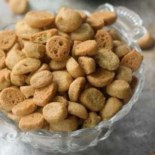

Peppernuts (Pfeffernusse Cookies)
DessertCookie
Servings12
PrepPT35M
CookPT14M

Ingredients
- 1 cup (2 sticks) unsalted butter, room temperature
- 1 ½ cups brown sugar, dark
- 2 large eggs, room temperature
- 2 ½ teaspoons anise extract, this is traditional for this recipe but can be left out if you do not like anise
- ½ teaspoon kosher salt
- 1 ½ teaspoons baking soda
- 1 ½ teaspoons ground cinnamon
- 1 teaspoon ground ginger
- ½ teaspoon ground white pepper
- ½ teaspoon ground cardamom or clove, clove is more traditional, but I prefer the flavor of cardamom
- 3 ½ cups all purpose flour
Directions
- At least 30 minutes before baking, take the butter (1 cup) and eggs (2 large) out of the refrigerator to come to room temperature. Measure out the rest of the ingredients.
- In the bowl of a stand mixer fit with a paddle attachment or in a large bowl with a hand mixer, cream together the butter and brown sugar (1 ½ cups) until light and fluffy. Scrape down the bowl periodically. This will take about 3 minutes.
- Add the eggs, anise extract (2 ½ teaspoons), salt (½ teaspoon), baking soda (1 ½ teaspoons), cinnamon (1 ½ teaspoons), ginger (1 teaspoon), white pepper (½ teaspoon), and cardamom or clove (½ teaspoon) into the bowl and mix until everything is incorporated.
- Add the flour (3 ½ cups) into the bowl and mix just until it is incorporated. Do not over-mix.
- Remove the dough from the bowl and place on a piece of plastic wrap. Press it down to about 1 inch thick and wrap it up. Chill the dough in the refrigerator for at least 30 minutes and up to 3 days.
- Preheat the oven to 350°F/175°C.
- Divide the dough into 16 pieces. This does not need to be a perfectly accurate division. I like to use a bench scraper but you can also use a knife.
- Press 1 piece of dough into a ball and roll it out between your hand and a clean work surface to form a thin rope about ¼ inch thick. Use a bench scraper or sharp knife to cut out tiny nut size pieces of dough. Place on a baking sheet. You can completely fill your sheet in a single layer but you will need to bake these in several batches to get them all baked. It typically works out to be cutting out the next sheet pan of cookies while the one before it bakes.
- Bake for 10-14 minutes until a dark golden brown. Check the cookies at 10 minutes and bake longer if needed. The cookies will be slightly soft when they first come out of the oven but will become very crispy as they cool.
- Store the completely cooled cookies in an airtight container at room temperature for up to 1 month.
Source
https://bakerbettie.com/holiday-party-made-easy-part-1-pepper-nuts/
This page includes Schema.org Recipe structured data for recipe importers.